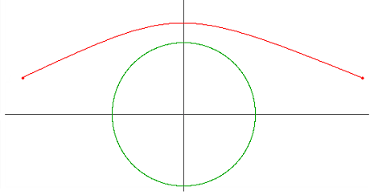
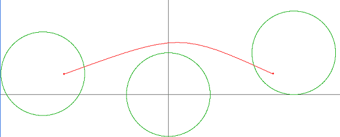
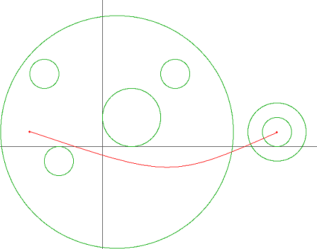
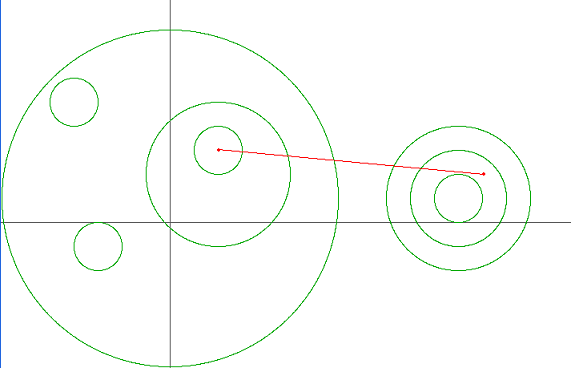

int least_borders(int x[], int y[], int r[], size_t n,
int x1, int y1, int x2, int y2) {
// you write code here
}
Imagine Circles Country as an infinite plane. You are given int
x[] and int y[] and int r[], where
(x[i],y[i]) are the coordinates of the i-th district's
center and r[i] is its radius. There are n
circles altogether. Qatam is currently at point
(x1,y1) and he needs to get to point
(x2,y2). Neither of these points lies on a district
border. Return the minimal number of district borders he must cross to
get to his destination.
n will be between 1 and 50, inclusive.
x, y and r
will each contain n elements.
x and y
will be between -1000 and 1000, inclusive.
r will be between 1 and 1000, inclusive.
x1, y1, x2 and y2
will be between -1000 and 1000, inclusive.
(x1,y1) and (x2,y2) will not lie on any of the circumferences.
{0}
{0}
{2}
1
-5
1
5
1
Returns: 0

{0,-6,6}
{0,1,2}
{2,2,2}
3
-5
1
5
1
Returns: 2

{1,-3,2,5,-4,12,12}
{1,-1,2,5,5,1,1}
{8,1,2,1,1,1,2}
7
-5
1
12
1
Returns: 3

{-3,2,2,0,-4,12,12,12}
{-1,2,3,1,5,1,1,1}
{1,3,1,7,1,1,2,3}
8
2
3
13
2
Returns: 5

{-107,-38,140,148,-198,172,-179,148,176,153,-56,-187}
{175,-115,23,-2,-49,-151,-52,42,0,68,109,-174}
{135,42,70,39,89,39,43,150,10,120,16,8}
12
102
16
19
-108
Returns: 3